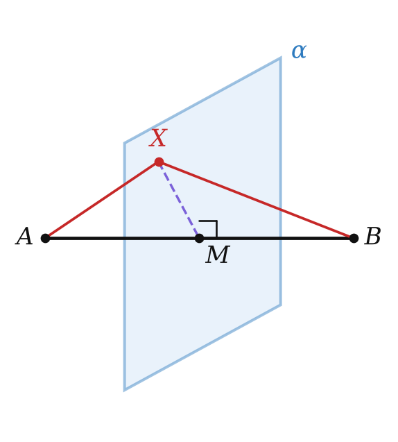
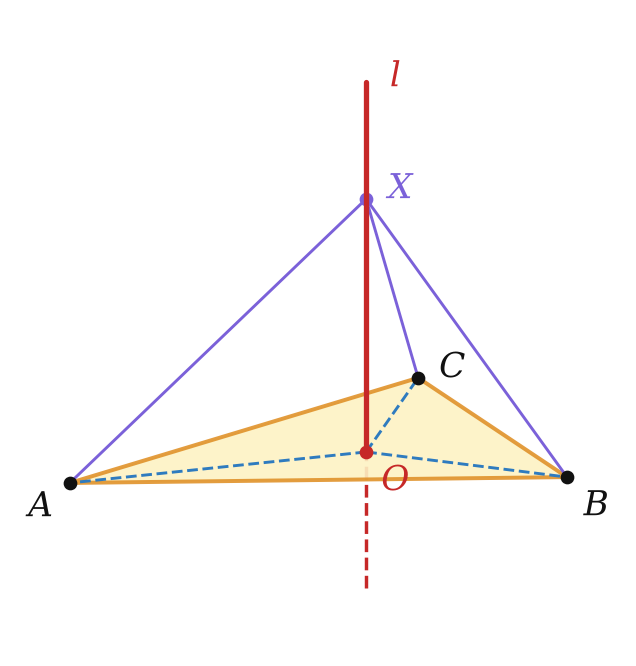
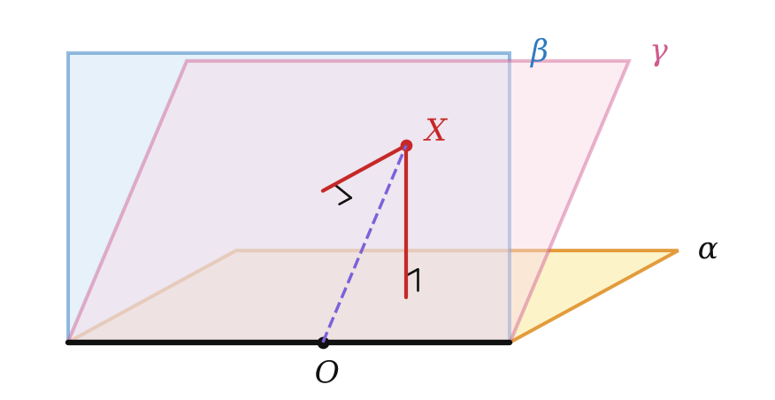

Теория
Геометрическим местом точек (ГМТ) называют множество всех точек пространства, обладающих определённым свойством.
Образно: задают свойство, а потом красят в красный цвет все точки пространства, у которых оно есть. Получившаяся «красная фигура» и есть ГМТ. Ты знаешь ГМТ на плоскости: окружность (точки на данном расстоянии от центра), серединный перпендикуляр, биссектриса угла. В пространстве всё «на одно измерение богаче».
Например, ГМТ, удалённых от данной плоскости на расстояние d, — это две плоскости, параллельные данной (по одной с каждой стороны). А ГМТ, удалённых от точки на расстояние R, — сфера.
Чтобы доказать, что фигура — ГМТ, нужно доказать две взаимно обратные теоремы: 1) каждая точка фигуры обладает свойством; 2) каждая точка со свойством лежит на фигуре. Одной половины недостаточно.
Точки, равноудалённые от концов отрезка
Плоскость, перпендикулярная отрезку и проходящая через его середину, является геометрическим местом точек, равноудалённых от концов этого отрезка.

1) Пусть α ⊥ AB, M — середина AB, X ∈ α, X ≠ M. В плоскости AXB прямая MX ⊥ AB и проходит через середину — это серединный перпендикуляр, значит, XA = XB.
2) Пусть YA = YB. В плоскости AYB прямая MY — серединный перпендикуляр к AB. Если бы Y ∉ α, то плоскость AYB пересекала бы α по прямой a, тоже перпендикулярной AB в точке M. Две разные прямые, перпендикулярные AB в одной точке одной плоскости, — противоречие. Значит, Y ∈ α. ∎
Это пространственный аналог серединного перпендикуляра: на плоскости была прямая, в пространстве — плоскость.
Точки, равноудалённые от вершин треугольника
ГМТ, равноудалённых от трёх точек A, B, C, не лежащих на одной прямой, — это прямая l, перпендикулярная плоскости ABC и проходящая через центр O описанной окружности. Точки прямой равноудалены от вершин (равные прямоугольные треугольники XOA, XOB, XOC), а любая равноудалённая точка проектируется в O (ключевая задача 1 § 11). Так же для любого многоугольника, около которого можно описать окружность.

Биссектор двугранного угла
Биссектором двугранного угла называют полуплоскость с границей на ребре, которая делит двугранный угол на два равных.
Биссектор двугранного угла является геометрическим местом точек, принадлежащих двугранному углу и равноудалённых от его граней.

Это аналог теоремы о биссектрисе угла. Чтобы увидеть это, проведи через точку X плоскость, перпендикулярную ребру: она пересечёт двугранный угол по линейному углу, биссектор — по его биссектрисе, а расстояния до граней станут расстояниями до сторон линейного угла. Пример: в кубе полуплоскость диагонального сечения AA₁C₁C — биссектор двугранного угла при ребре AA₁.
Разбор примеров
AB = 10. Точка X равноудалена от A и B, XA = 13. Найдите расстояние от X до середины M отрезка AB.
X лежит в плоскости, перпендикулярной AB и проходящей через M (теорема 18.1), поэтому XM ⊥ AB. XM = √(13² − 5²) = 12.
Сколько точек данной прямой l может быть равноудалено от точек A и B?
Искомые точки — общие точки l и плоскости α из теоремы 18.1. Если l пересекает α — одна точка; если l ∥ α — ни одной; если l ⊂ α — все точки прямой.
Точка X равноудалена от вершин прямоугольного треугольника с катетами 6 и 8 и удалена от его плоскости на 12. Найдите расстояние от X до вершин.
X лежит на перпендикуляре к плоскости через центр описанной окружности — середину гипотенузы, R = 5. Расстояние √(12² + 5²) = 13.
Задачи урока
Реши в тетради, к каждой задаче — чертёж. Разберём на занятии.
Тест к уроку
Домашнее задание
Задачи Д1–Д6 ниже. Из учебника: № 18.1, 18.2, 18.6, 18.10. Выучить теоремы 18.1 и 18.2. Подготовка к уроку-повторению по главе 3: перечитать итоги главы (с. 193–195 учебника) и выписать на одну страницу тетради все определения углов и расстояний, признаки перпендикулярности и формулы главы — это будет твоя шпаргалка на уроке.